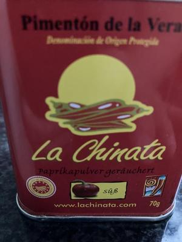
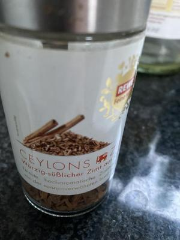
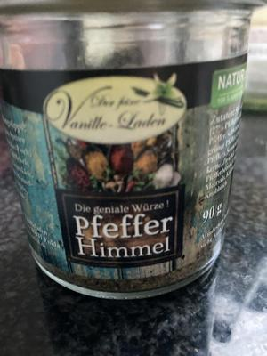

Gewürzerinnerungen
Ich bin oft zu meiner Freundin gegangen. Meine Eltern waren am Arbeiten und ich Schlüsselkind. Also lieber zu ihr und ihren Geschwistern. Außerdem gab es immer was leckeres zu essen. Am liebsten mochte ich das Brötchen mit Chorizo. Die spanische Paprikawurst mit geräuchertem Paprikapulver.
Dies ist der Beginn meiner Sinnesreise auf Anstupser von Daniela Beer. Danke für diese wunderbare Blogparade: Meine drei Lieblingsgewürze und wo ich sie einsetze.
Ohne diesen Anstupser wäre ich nicht so bewusst in die Erinnerung getaucht.
Sobald ich die kleine Dose mit diesem Paprikapulver aus der Schublade nehme, erinnere ich mich an diese schöne Zeit. Ich würze gebratene Nudeln, Soßen, Gemüse, Eier, Chilli con carne mit geräucherten Paprikapulver und muss lächeln. Ein klein wenig Spanien, ein klein wenig Freundschaft.
{kind=link}

Geräuchertes Paprikapulver
In der Küche riecht es nach Apfelkuchen und Zimt. Ein Geruch nach Kindheit, warmer Küche, Geschichten, Weihnachten, Oma Annas Holzofenherd… ach so viel. Ich liebe Zimt. Nicht nur im Kuchen. Auf den Honig den ich aufs Brot streiche. In und auf Pflaumenmus, im Kaffee, im Müsli, im Joghurt. Aber auch in herzhaften Gerichten wie Nudelsoßen, Reispfannen. Auch hier immer ein untergründiges gutes Gefühl und eine Wärme im Bauch.
{kind=link}

Zimt
Mein drittes Lieblingsgewürz ist eine Gewürzmischung mit dem herrlichen Namen „Pfeffer Himmel“. Allein das schon hat mich schon dafür eingenommen. Die Mischung enthält weißen, schwarzen, grünen Pfeffer, Cumeo-Pfeffer, Sonnenblumenkerne, Zwiebeln, rosa Pfefferbeeren, Chilli, Meersalz, Kräuter, Knoblauch. Eine wilde Zusammenstellung die herrlich frisch und lebendig duftet. Das erste Glas kam als Geschenk zu meinem Geburtstag von einem Arbeitskollegen. Ich war sofort Verliebt. Auf der Arbeit habe ich ein Glas als Notfallgewürz. Damit wird fast alles an faden Kantinenessen lecker. Auch im Salat und bei den verschiedenen Gerichten findet es seinen Einsatz. Und ich liebe es auf Butterbrot.
{kind=link}

Pfeffer Himmel
Ich kann es nicht genau beschreiben, aber ich assoziiere mit dem Geruch, Geschmack und Aussehen (frisches Grün) immer Sommer. Also hohle ich mir Sommervibes auf den Tisch immer, wenn ich den Pfeffer Himmel verwende.
Gehst Du auch manchmal auf Sinnesreise?
Kommentare